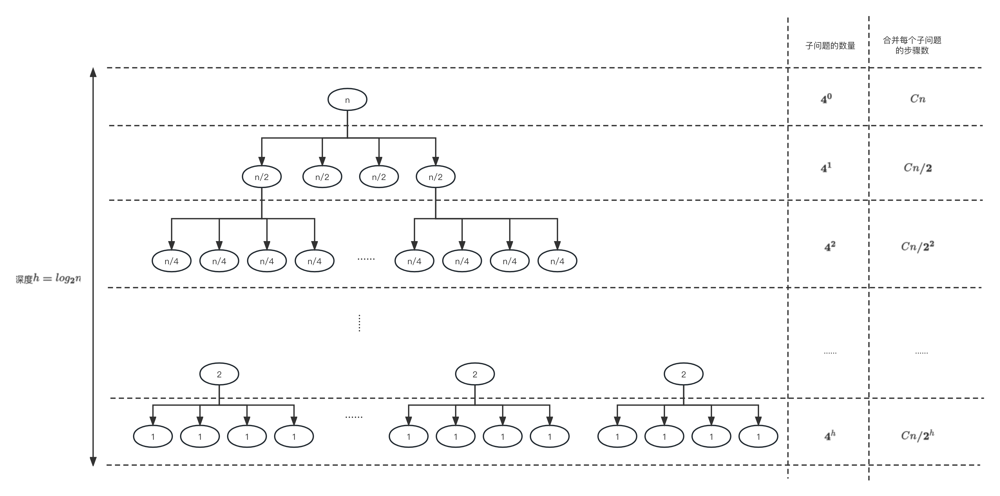
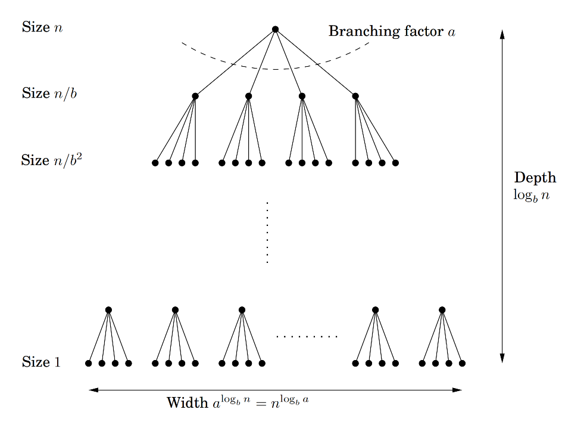

当我们要设计一套算法去解决问题时，会有一些常见的算法策略帮助我们设计思路，比如贪心算法、分治法、动态规划等。在实际应用中，我们会根据问题场景的特点来选择不同的策略。这篇文章将会讲解分治法，当问题可以分解为多个相互独立的小问题时，我们可以使用这个策略。
通常分治法会通过以下3个步骤来解决问题：
- 将问题分解成与原问题类型相似、相互独立的子问题，子问题又可以通过相同的方式分解成更小的子问题。通过递归的方式，将问题分解到足够小，小到每个子问题可以直接求解。
- 解决每个子问题。
- 将子问题的解合并成父问题的解，接着再进一步合并到最大问题的解。
使用分治法思想最典型的例子之一就是归并排序（merge sort）.
分治法与时间复杂度
分治法最关键的步骤就是上述的第一步，这个步骤设计得好，算法的时间复杂度会有大的优化。我们通过下面这个例子感受分治法和时间复杂度的关系。
整数相乘
在这个例子里，我们的目标是计算2个n位整数相乘的结果。当n比较大的时候，一般计算机的CPU是难以通过1个指令直接计算出结果的，因此我们需要将大的整数相乘分为若干个小的整数相乘，而小的整数相乘又可以进一步分为若干个更小的整数相乘，直到CPU可以直接计算为止。最后我们将若干个小的整数相乘的计算结果进行结合，就能获取到最后想要的结果。
具体步骤如下。
假设我们有两个输入分别是x和y，它们都是n位的整数。首先我们会将每个整数分为左右两半，分别以下标L和下标R表示。这样x和y可以以下面这个公式表示（为了方便计算，我们假设n为2的幂，也就是说\(2^x = n\)）：
\[\begin{align} x = 2^{n/2}x_L + x_R \\ y = 2^{n/2}y_L + y_R \end{align}\]假设 \(x=10110110_2\)（下标2表示这个数是以二进制表示），那么\(x_L=1011_2\)，\(x_R=0110_2\)。
那么x和y相乘可以被描述为
\[\begin{align} xy &= (2^{n/2}x_L + x_R)(2^{n/2}y_L + y_R) \\ &= 2^nx_Ly_L + 2^{n/2}(x_Ly_R + x_Ry_L) + x_Ry_R \end{align}\]在这个公式里，我们可以看到分治法的思想。我们把n位整数相乘\(xy\)分解为4个n/2位整数相乘，分别是\(x_Ly_L\)、\(x_Ly_R\)、\(x_Ry_L\)和\(x_Ry_R\)。我们可以将这4个相乘以同样的方式继续分解下去，直到计算机能够轻易计算为止。这就是上述分治法的第一步：
- 将问题分解成类型与原问题相似、相互独立的子问题，子问题又可以通过相同的方式分解成更小的子问题。通过递归的方式，将问题分解到足够小，小到每个子问题可以直接求解。
当我们计算完4个n/2位整数相乘的结果后，我们要做的就是合并这些结果。从公式中我们可以知道，这一过程主要有两个步骤。第1步是将结果乘以\(2^n\)或者\(2^{n/2}\)，实际上就是让2进制数往右移\(n\)位或\({n/2}\)位，很容易解决。第2步就是将结果进行相加。总的来说，合并过程的时间复杂度约为\(Cn\)，其中\(C\)为常量。这就是上述分治法度第三步：
- 将子问题的解合并成父问题的解，接着再进一步合并到最大问题的解。
我们将上述计算2个n位整数相乘过程的时间复杂度表示为\(T(n)\)，那么我们得到
\[\begin{align} T(n) &= 4T(n/2) + Cn \\ T(1) &= 1 \end{align}\]假设我们将子问题递归到\(n=1\)为止，那么整个递归过程如下： 
因此我们可以得到
\[\begin{align} T(n) &= 4^0 \times Cn + 4^1 \times Cn/2 + 4^3 \times Cn/4 + ... + 4^h \times Cn/2^h \\ &= Cn[4^0/2^0 + 4^1/2^1 + 4^2/2^2 + ... + 4^h/2^h] \\ &= Cn[2^0 + 2^1 + 2^2 + ... + 2^h] \\ &= Cn[2^{h+1} - 1] \\ &= Cn[2n - 1] \\ &= O(n^2) \end{align}\]总的时间复杂度为\(O(n^2)\).
优化整数相乘
上述算法的时间复杂度是\(O(n^2)\)，其实还可以进一步优化，那如何优化呢？上文已经提到过，分治法最关键的一步就是第一步：
- 将问题分解成与原问题类型相似、相互独立的子问题，子问题又可以通过相同的方式分解成更小的子问题。通过递归的方式，将问题分解到足够小，小到每个子问题可以直接求解。
下方公式就代表着上述分治法的第1步，我们可以尝试优化这个公式，以降低算法的时间复杂度。
\[xy = (2^{n/2}x_L + x_R)(2^{n/2}y_L + y_R) = 2^nx_Ly_L + 2^{n/2}(x_Ly_R + x_Ry_L) + x_Ry_R\]
数学家高斯曾发现两个虚数相乘的计算过程
\[(a+bi)(c+di)=ac-bd+(bc+ad)i\]看起来需要进行4次乘法运算（\(ac\)、\(bd\)、\(bc\)和\(ad\)），但其实只需3次就行，因为
\[bc+ad=(a+b)(c+d)-ac-bd\]这3次乘法运算分别是\((a+b)(c+d)\)、\(ac\)和\(bd\)。
因此将这个发现结合上述整数相乘的公式，我们可以把公式优化为
\[\begin{align} xy &= (2^{n/2}x_L + x_R)(2^{n/2}y_L + y_R) \\ &= 2^nx_Ly_L + 2^{n/2}(x_Ly_R + x_Ry_L) + x_Ry_R \\ &= 2^nx_Ly_L + 2^{n/2}[(x_R + x_L)(y_R + y_L) - x_Ry_R - x_Ly_L] + x_Ry_R \end{align}\]通过这个公式，我们把n位整数相乘从上述的分解为4个n/2位整数相乘优化到为3个，分别是\(x_Ly_L\)、\(x_Ry_R\)和\((x_R + x_L)(y_R + y_L)\)。 从而时间复杂度为
\[\begin{align} T(n) &= 3T(n/2) + Cn \\ &= O(n^{1.59}) \end{align}\]可以看到我们把时间复杂度从\(O(n^2)\)优化到\(O(n^{1.59})\)。
主定理 Master Theorem
我们使用分治法去解决一个算法问题时，假设每个问题可以分解为\(a\)个子问题，并且父问题入参大小为\(n\)子问题入参大小为\(n/b\)，合并子问题需要的时间复杂度为\(O(n^d)\)，如下图：  那么算法的时间复杂度可以用以下公式表示
\[\begin{align} T(n) = aT(n/b) + O(n^d) (a>0, b>1, d \geq 0) \end{align}\]这时我们可以直接利用主定理(Master theorem)来直接计算算法的时间复杂度。
- 主定理
- 如果\(T(n) = aT(n/b) + O(n^d)\), 其中\(a>0, b>1, d \geq 0\)，那么
例如上述整数相乘，我们有
\[\begin{align} T(n) &= O(n^{log_ba}) \\ &= O(n^{log_{2}3}) \\ &\approx O(n^{1.58}) \end{align}\]\(T(n) = 3T(n/2) + Cn\) 那么\(a=3,b=2,d=1\)，带入公式可得\(d < log_{b}a\)，我们可以得到
分治法的其他应用
- merge sort
- 找中位数
- 矩阵乘法
- 快速傅立叶变换